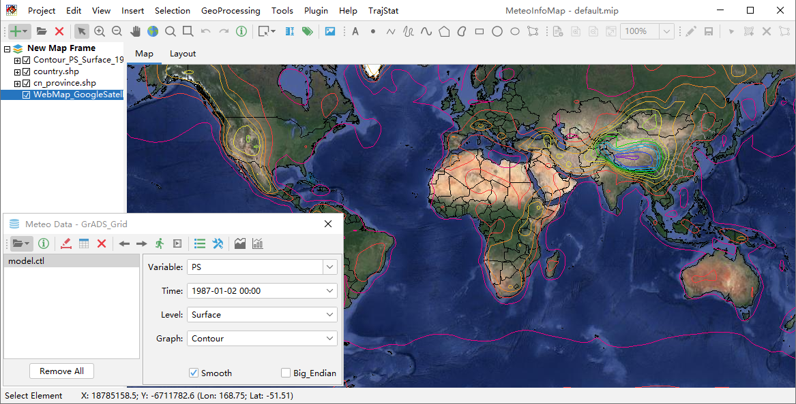

MeteoInfo框架体系¶
MeteoInfo开发语言的选择¶
MeteoInfo的开发语言是Java和Jython。Java是面向对象的计算机语言，具有简单性、分布式、健壮性、安全性、平台独立与可移植性、 多线程、动态性等特点，长期占据计算机语言流行排行榜前列，拥有众多各类功能的开源库，包括支持众多大气科学数据格式的由Unidata 开发的NetCDF Java库，非常适合用来开发气象领域的科研和业务软件。美国国家气象局新一代高级天气交互式处理系统（AWIPS II） 和德国气象局主导开发的业务系统NinJo都是用Java语言开发的。由于即时编译（JIT）等技术的不断发展，Java程序的运行效率也有极大 提升，和C/C++程序的差距越来越小。Java语言编写的程序可以很方便的跨平台运行，也使得其在气象这个多平台盛行的领域更为方便。
Java语言是静态的编译语言，和动态解释性语言（如Python）相比开发难度较大，不适合作为面向最终用户的数据分析语言。Jython语言 是Python语言的Java实现，二者的语法相同，标准库也一样。Jython可以和Java语言无缝衔接，很适合做Java程序的脚本语言。由于 Python的流行，Jython的学习成本也很低。
MeteoInfo框架¶
MeteoInfo包括了两个面向最终用户的应用程序：MeteoInfoMap和MeteoInfoLab。MeteoInfoMap是一个GIS桌面软件，包括图层 控制、地图显示、地图布局、图层编辑、空间分析等功能，能够方便的显示地图数据，并将地学数据生成图层和地图数据叠加显示，以地图 的形式将科学数据的空间特性展示出来。MeteoInfoLab是科学计算和可视化软件，包含了众多多维数组计算和二、三维可视化的功能函 数，可以通过编写Jython脚本程序进行复杂的数据分析和绘图。MeteoInfo Java库主要有多维数组计算、科学数据文件读写、GIS、二、 三维图形等功能模块，是MeteoInfoMap和MeteoInfoLab开发的基础库，该库也可以被用来开发其它GIS和科学计算相关的科研业务软件。
